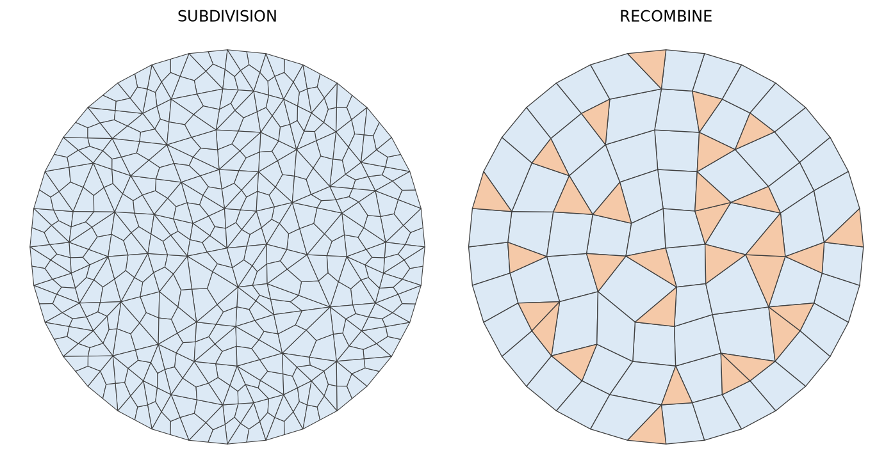

- inputThe TRI3 mesh to convert into QUAD4 elements.
C++ Type:MeshGeneratorName
Controllable:No
Description:The TRI3 mesh to convert into QUAD4 elements.
TriToQuadConverter
Converts a mesh consisting of TRI3 elements into a mesh consisting of QUAD4 elements, either by splitting every triangle into three quadrilaterals or by merging pairs of adjacent triangles.
Overview
The input mesh must consist exclusively of TRI3 elements, must lie in the XY plane, and must be replicated. Meshes of higher-order triangles, and meshes that mix triangles with other element types, are rejected.
Two conversion algorithms are available through "algorithm", and they trade a guaranteed pure-quadrilateral result against element quality.

Figure 1: The two algorithms applied to the same frontal triangulation of a disk. SUBDIVISION splits every triangle into three quadrilaterals. RECOMBINE merges pairs of adjacent triangles and leaves the triangles that found no partner, shown in orange.
Subdivision
SUBDIVISION splits every triangle into three quadrilaterals, each built on the triangle centroid, one vertex, and the midpoints of the two edges meeting at that vertex. Every element of the output is a QUAD4, the output is conformal, and the result does not depend on the triangle quality of the input. A mesh of triangles becomes a mesh of quadrilaterals at roughly half the original element size.
The cost of that guarantee is quality: the centroid of each original triangle becomes a node of valence three, so the output carries one irregular vertex per input triangle.
Recombination
RECOMBINE merges pairs of adjacent triangles into quadrilaterals by deleting the edge they share. Each pair scores a quality (Remacle et al., 2012), computed from the internal angles of the quadrilateral the merge would produce:
A rectangle scores , and a pair whose merged shape is not convex scores . Only pairs reaching "eta_min" are merged. Raising the threshold buys quality at the cost of yield; lowering it leaves fewer triangles behind but admits flatter quadrilaterals.
The pairing is greedy: the candidates are taken in order of decreasing , keeping each one whose two triangles are both still unmerged. This is fast but not optimal: a locally attractive merge can consume a triangle that a better global pairing needed.
Recombination is quad-dominant, not pure quad. Triangles are left over wherever no admissible partner remains.
Two kinds of candidate pair are never merged, regardless of their score:
a pair whose shared edge carries any boundary id. Merging deletes that edge and would delete the sideset entry on it, so interior sidesets survive the conversion instead of being silently dropped.
a pair whose two triangles belong to different subdomains. Merging across a subdomain interface would move that interface.
Where the two triangles of a merged pair disagree on an extra element integer, the merged quadrilateral inherits the value of the lower-id parent triangle. That rule makes the result reproducible from one run to the next; it does not attempt to reconcile the two values.
Leftover Triangles
The triangles that recombination could not merge are handled in either of two ways, which are mutually exclusive.
By default they are moved out of the subdomains they came from, so that no subdomain mixes TRI3 and QUAD4 elements. The triangles of each subdomain go into a new subdomain of their own, named after the original one with an underscore and "tri_subdomain_name_suffix" appended: with the default suffix, the triangles of left_block end up in left_block_tri, and a subdomain without a name contributes its id instead. Isolating them makes the recombination yield measurable, and allows Exodus output, which requires a single element type per subdomain.
"all_quad" instead eliminates them, so that the output consists exclusively of QUAD4 elements. After the merges are made, every element of the mesh is subdivided once: each merged quadrilateral into four, each leftover triangle into three. A mesh whose recombination produced quadrilaterals and left triangles therefore ends with elements, at half the element size the merges produced.
Subdividing only the leftover triangles would be cheaper, but it would leave each of their unsplit neighbors with a hanging node in the middle of a side. Splitting everything is what keeps the mesh conformal, and it is why the two algorithms cannot be mixed element by element.
On a curved boundary, the nodes this subdivision creates are the midpoints of the existing chords, so they sit strictly inside the curve. MoveBoundaryNodesToCurveGenerator moves them back onto the curve.
Preserved Mesh Data
The conversion carries the following through, under both algorithms:
subdomain ids and names, apart from the leftover triangles of a recombination, which move into the subdomains derived from theirs as described above;
sideset ids and names. Where a boundary edge is split, under
SUBDIVISIONor under "all_quad", both halves inherit the ids of the original edge;nodesets, rebuilt on the converted mesh;
extra element integers.
Example Syntax
Splitting every triangle of a 32-triangle mesh into three quadrilaterals gives 96 QUAD4 elements and no leftover triangle:
[Mesh<<<{"href": "../../syntax/Mesh/index.html"}>>>]
[gmg]
type = GeneratedMeshGenerator<<<{"description": "Create a line, square, or cube mesh with uniformly spaced or biased elements.", "href": "GeneratedMeshGenerator.html"}>>>
dim<<<{"description": "The dimension of the mesh to be generated"}>>> = 2
nx<<<{"description": "Number of elements in the X direction"}>>> = 4
ny<<<{"description": "Number of elements in the Y direction"}>>> = 4
[]
[tri]
type = ElementsToSimplicesConverter<<<{"description": "Splits all non-simplex elements in a mesh into simplices.", "href": "ElementsToSimplicesConverter.html"}>>>
input<<<{"description": "Input mesh to convert to all-simplex mesh"}>>> = gmg
[]
[to_quad]
type = TriToQuadConverter<<<{"description": "Converts a mesh consisting of TRI3 elements into a mesh consisting of QUAD4 elements, either by splitting every triangle into three quadrilaterals or by merging pairs of adjacent triangles.", "href": "TriToQuadConverter.html"}>>>
input<<<{"description": "The TRI3 mesh to convert into QUAD4 elements."}>>> = tri
algorithm<<<{"description": "The algorithm used to build the quadrilaterals. 'SUBDIVISION' splits every triangle into three quadrilaterals. 'RECOMBINE' merges pairs of adjacent triangles into quadrilaterals."}>>> = SUBDIVISION
[]
# The subdivision of each triangle depends on element id numbering
allow_renumbering = false
[]Recombining the same kind of mesh, with the leftover triangles of each of its two subdomains collected into a subdomain named after it. The mesh reaching the conversion carries two subdomains, a sideset on their interface, a second sideset on an interior edge, a nodeset, and an extra element integer, none of which the conversion discards:
[Mesh<<<{"href": "../../syntax/Mesh/index.html"}>>>]
[gmg]
type = GeneratedMeshGenerator<<<{"description": "Create a line, square, or cube mesh with uniformly spaced or biased elements.", "href": "GeneratedMeshGenerator.html"}>>>
dim<<<{"description": "The dimension of the mesh to be generated"}>>> = 2
nx<<<{"description": "Number of elements in the X direction"}>>> = 4
ny<<<{"description": "Number of elements in the Y direction"}>>> = 2
xmax<<<{"description": "Upper X Coordinate of the generated mesh"}>>> = 2
ymax<<<{"description": "Upper Y Coordinate of the generated mesh"}>>> = 1
[]
[tri]
type = ElementsToSimplicesConverter<<<{"description": "Splits all non-simplex elements in a mesh into simplices.", "href": "ElementsToSimplicesConverter.html"}>>>
input<<<{"description": "Input mesh to convert to all-simplex mesh"}>>> = gmg
[]
[blk_right]
type = SubdomainBoundingBoxGenerator<<<{"description": "Changes the subdomain ID of elements either (XOR) inside or outside the specified box to the specified ID.", "href": "SubdomainBoundingBoxGenerator.html"}>>>
input<<<{"description": "The mesh we want to modify"}>>> = tri
block_id<<<{"description": "Subdomain id to set for inside/outside the bounding box"}>>> = 2
block_name<<<{"description": "Subdomain name to set for inside/outside the bounding box (optional)"}>>> = right_block
bottom_left<<<{"description": "The bottom left point (in x,y,z with spaces in-between)."}>>> = '0 0 0'
top_right<<<{"description": "The bottom left point (in x,y,z with spaces in-between)."}>>> = '2 1 0'
[]
[blk_left]
type = SubdomainBoundingBoxGenerator<<<{"description": "Changes the subdomain ID of elements either (XOR) inside or outside the specified box to the specified ID.", "href": "SubdomainBoundingBoxGenerator.html"}>>>
input<<<{"description": "The mesh we want to modify"}>>> = blk_right
block_id<<<{"description": "Subdomain id to set for inside/outside the bounding box"}>>> = 1
block_name<<<{"description": "Subdomain name to set for inside/outside the bounding box (optional)"}>>> = left_block
bottom_left<<<{"description": "The bottom left point (in x,y,z with spaces in-between)."}>>> = '0 0 0'
top_right<<<{"description": "The bottom left point (in x,y,z with spaces in-between)."}>>> = '1.25 1 0'
[]
[iface]
type = SideSetsBetweenSubdomainsGenerator<<<{"description": "MeshGenerator that creates a sideset composed of the nodes located between two or more subdomains.", "href": "SideSetsBetweenSubdomainsGenerator.html"}>>>
input<<<{"description": "The mesh we want to modify"}>>> = blk_left
primary_block<<<{"description": "The primary set of blocks for which to draw a sideset between"}>>> = left_block
paired_block<<<{"description": "The paired set of blocks for which to draw a sideset between"}>>> = right_block
new_boundary<<<{"description": "The list of boundary names to create on the supplied subdomain"}>>> = block_interface
[]
[diag_ss]
type = ParsedGenerateSideset<<<{"description": "A MeshGenerator that adds element sides to a sideset if the centroid of the side satisfies the `combinatorial_geometry` expression.", "href": "ParsedGenerateSideset.html"}>>>
input<<<{"description": "The mesh we want to modify"}>>> = iface
combinatorial_geometry<<<{"description": "Function expression encoding a combinatorial geometry"}>>> = 'x > 1.7 & x < 1.8 & y > 0.2 & y < 0.3'
included_subdomains<<<{"description": "A set of subdomain names or ids whose sides will be included in the new sidesets. A side is only added if the subdomain id of the corresponding element is in this set."}>>> = right_block
normal<<<{"description": "If supplied, only faces with normal equal to this, up to normal_tol, will be added to the sidesets specified"}>>> = '1 0 0'
normal_tol<<<{"description": "If normal is supplied then faces are only added if face_normal.normal_hat >= 1 - normal_tol, where normal_hat = normal/|normal|"}>>> = 0.4
new_sideset_name<<<{"description": "The name of the new sideset"}>>> = interior_diagonal
[]
[origin_ns]
type = ExtraNodesetGenerator<<<{"description": "Creates a new node set and a new boundary made with the nodes the user provides.", "href": "ExtraNodesetGenerator.html"}>>>
input<<<{"description": "The mesh we want to modify"}>>> = diag_ss
new_boundary<<<{"description": "The names of the boundaries to create"}>>> = origin_node
coord<<<{"description": "The nodes with coordinates you want to be in the nodeset. Separate multple coords with ';' (Either this parameter or \"nodes\" must be supplied)."}>>> = '0 0 0'
[]
[eeid]
type = ParsedExtraElementIDGenerator<<<{"description": "Uses a parsed expression to set an extra element id for elements (via their centroids).", "href": "ParsedExtraElementIDGenerator.html"}>>>
input<<<{"description": "The mesh we want to modify"}>>> = origin_ns
expression<<<{"description": "Function expression to return the extra element ID based on element centroid"}>>> = '1 + floor(4 * x) + 10 * floor(4 * y)'
extra_elem_integer_name<<<{"description": "Name of the extra element integer to be added by this generator"}>>> = tri_id
[]
[to_quad]
type = TriToQuadConverter<<<{"description": "Converts a mesh consisting of TRI3 elements into a mesh consisting of QUAD4 elements, either by splitting every triangle into three quadrilaterals or by merging pairs of adjacent triangles.", "href": "TriToQuadConverter.html"}>>>
input<<<{"description": "The TRI3 mesh to convert into QUAD4 elements."}>>> = eeid
algorithm<<<{"description": "The algorithm used to build the quadrilaterals. 'SUBDIVISION' splits every triangle into three quadrilaterals. 'RECOMBINE' merges pairs of adjacent triangles into quadrilaterals."}>>> = RECOMBINE
tri_subdomain_name_suffix<<<{"description": "'RECOMBINE' algorithm only: the triangles which could not be merged are moved out of each subdomain into a new subdomain named after it, with an underscore and this suffix appended. A subdomain without a name contributes its id instead."}>>> = leftover
[]
# Both the triangulation and the recombination depend on element id numbering
allow_renumbering = false
[]Running the same mesh through the same merges with "all_quad" instead removes every remaining triangle:
[Mesh<<<{"href": "../../syntax/Mesh/index.html"}>>>]
[to_quad]
type = TriToQuadConverter<<<{"description": "Converts a mesh consisting of TRI3 elements into a mesh consisting of QUAD4 elements, either by splitting every triangle into three quadrilaterals or by merging pairs of adjacent triangles.", "href": "TriToQuadConverter.html"}>>>
input<<<{"description": "The TRI3 mesh to convert into QUAD4 elements."}>>> = eeid
algorithm<<<{"description": "The algorithm used to build the quadrilaterals. 'SUBDIVISION' splits every triangle into three quadrilaterals. 'RECOMBINE' merges pairs of adjacent triangles into quadrilaterals."}>>> = RECOMBINE
all_quad<<<{"description": "'RECOMBINE' algorithm only: whether the triangles that could not be merged are eliminated so that the converted mesh consists exclusively of quadrilaterals."}>>> = true
[]
[]All three examples disable renumbering. The triangulation, the subdivision and the merges all break ties by element id, so their results are reproducible only while the element numbering is stable.
Triangulations intended for recombination are best produced by XYFrontalDelaunayGenerator, which biases the triangles toward right angles so that more pairs clear "eta_min". When the boundary of the input is a parametric curve, MoveBoundaryNodesToCurveGenerator can move the boundary nodes that "all_quad" created back onto that curve.
References
- J.-F. Remacle, J. Lambrechts, B. Seny, E. Marchandise, A. Johnen, and C. Geuzaine.
Blossom-quad: a non-uniform quadrilateral mesh generator using a minimum-cost perfect-matching algorithm.
International Journal for Numerical Methods in Engineering, 89(9):1102–1119, 2012.
doi:10.1002/nme.3279.[Export]
Input Parameters
- algorithmRECOMBINEThe algorithm used to build the quadrilaterals. 'SUBDIVISION' splits every triangle into three quadrilaterals. 'RECOMBINE' merges pairs of adjacent triangles into quadrilaterals.
Default:RECOMBINE
C++ Type:MooseEnum
Controllable:No
Description:The algorithm used to build the quadrilaterals. 'SUBDIVISION' splits every triangle into three quadrilaterals. 'RECOMBINE' merges pairs of adjacent triangles into quadrilaterals.
Optional Parameters
- all_quadFalse'RECOMBINE' algorithm only: whether the triangles that could not be merged are eliminated so that the converted mesh consists exclusively of quadrilaterals.
Default:False
C++ Type:bool
Controllable:No
Description:'RECOMBINE' algorithm only: whether the triangles that could not be merged are eliminated so that the converted mesh consists exclusively of quadrilaterals.
- eta_min0.3'RECOMBINE' algorithm only: the quality score eta = 1 - (2 / pi) max_k |pi / 2 - alpha_k| of the quadrilateral, in which alpha_k are its four internal angles, that a pair of adjacent triangles must reach to be merged. A rectangle scores 1 and a non-convex quadrilateral 0.
Default:0.3
C++ Type:Real
Unit:(no unit assumed)
Range:eta_min > 0 & eta_min <= 1
Controllable:No
Description:'RECOMBINE' algorithm only: the quality score eta = 1 - (2 / pi) max_k |pi / 2 - alpha_k| of the quadrilateral, in which alpha_k are its four internal angles, that a pair of adjacent triangles must reach to be merged. A rectangle scores 1 and a non-convex quadrilateral 0.
- tri_subdomain_name_suffixtri'RECOMBINE' algorithm only: the triangles which could not be merged are moved out of each subdomain into a new subdomain named after it, with an underscore and this suffix appended. A subdomain without a name contributes its id instead.
Default:tri
C++ Type:SubdomainName
Controllable:No
Description:'RECOMBINE' algorithm only: the triangles which could not be merged are moved out of each subdomain into a new subdomain named after it, with an underscore and this suffix appended. A subdomain without a name contributes its id instead.
Recombination Parameters
- enableTrueSet the enabled status of the MooseObject.
Default:True
C++ Type:bool
Controllable:No
Description:Set the enabled status of the MooseObject.
- save_with_nameKeep the mesh from this mesh generator in memory with the name specified
C++ Type:std::string
Controllable:No
Description:Keep the mesh from this mesh generator in memory with the name specified
Advanced Parameters
- nemesisFalseWhether or not to output the mesh file in the nemesisformat (only if output = true)
Default:False
C++ Type:bool
Controllable:No
Description:Whether or not to output the mesh file in the nemesisformat (only if output = true)
- outputFalseWhether or not to output the mesh file after generating the mesh
Default:False
C++ Type:bool
Controllable:No
Description:Whether or not to output the mesh file after generating the mesh
- show_infoFalseWhether or not to show mesh info after generating the mesh (bounding box, element types, sidesets, nodesets, subdomains, etc)
Default:False
C++ Type:bool
Controllable:No
Description:Whether or not to show mesh info after generating the mesh (bounding box, element types, sidesets, nodesets, subdomains, etc)